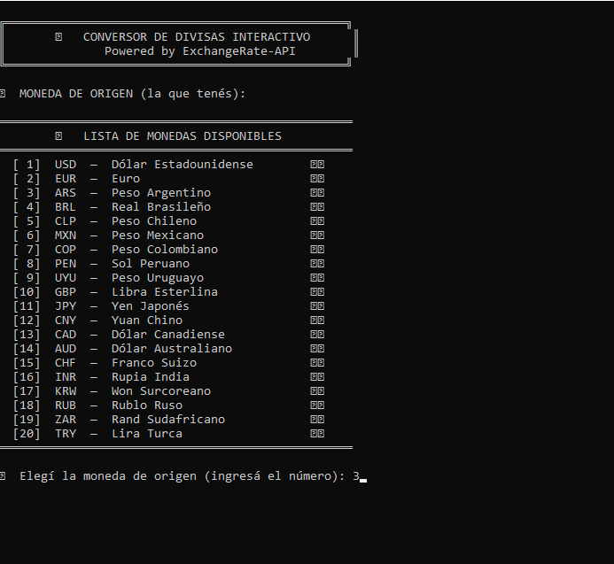
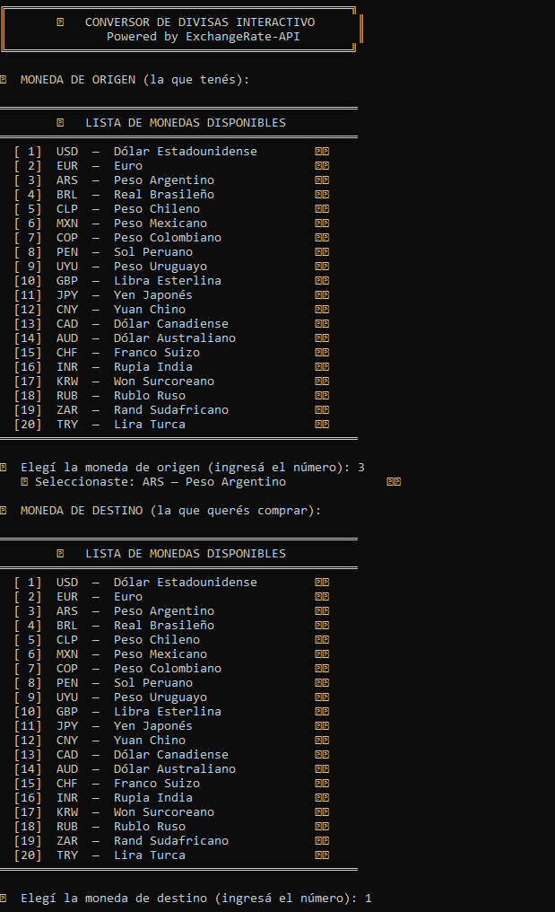
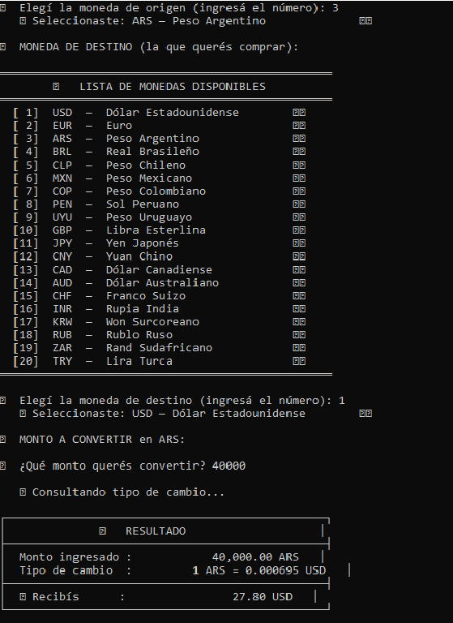
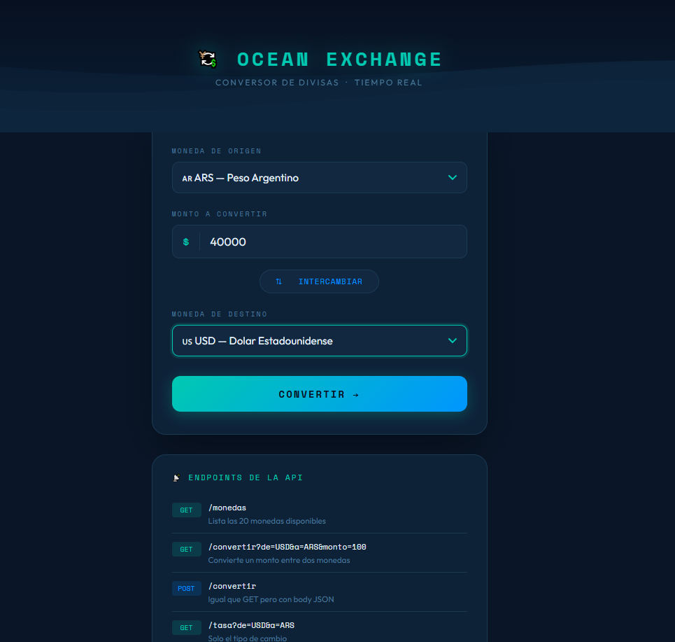
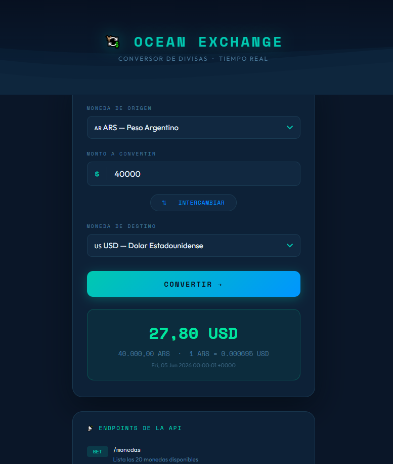
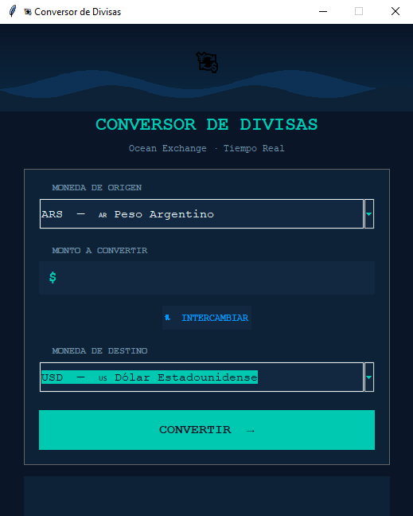
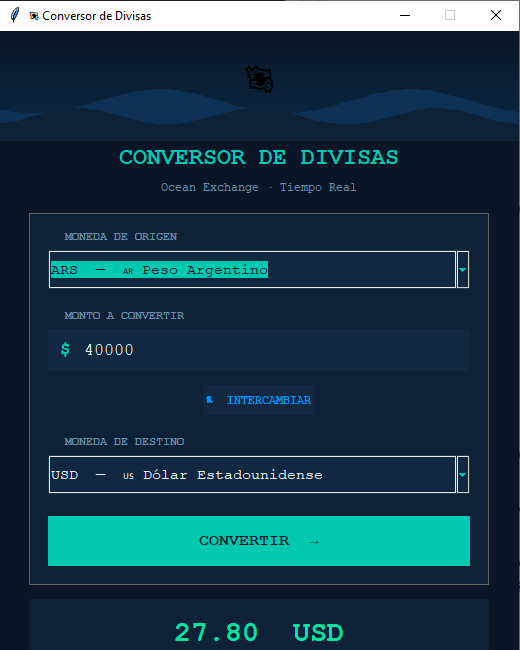

Versión en consola
Primera versión del proyecto, ejecutada desde terminal. Permite ingresar datos, seleccionar monedas y visualizar el resultado directamente en consola.
Aplicación desarrollada en Python para convertir importes entre diferentes monedas. El proyecto fue construido en tres versiones: consola, interfaz gráfica con Tkinter y aplicación web con Flask.
El Conversor de Divisas es un proyecto desarrollado para practicar la creación de soluciones en Python desde distintos enfoques: ejecución en consola, interfaz gráfica de escritorio con Tkinter y versión web con Flask.
La aplicación permite convertir importes entre diferentes monedas, ingresando un valor, seleccionando una moneda de origen y una moneda de destino, y obteniendo como resultado una conversión estimada.
El objetivo del proyecto fue aplicar lógica de programación, validación de datos, consumo de información externa y diseño de interfaces orientadas al usuario.
Primera versión del proyecto, ejecutada desde terminal. Permite ingresar datos, seleccionar monedas y visualizar el resultado directamente en consola.
Segunda versión con interfaz gráfica de escritorio, orientada a mejorar la experiencia del usuario mediante campos, botones y visualización clara del resultado.
Tercera versión del proyecto, desarrollada como aplicación web con Flask, permitiendo interactuar con el conversor desde el navegador.
El proyecto fue desarrollado en tres etapas: una primera versión ejecutada desde consola, una segunda versión con interfaz gráfica en Tkinter y una tercera versión web utilizando Flask.
Primera versión del conversor, ejecutada desde terminal. Permite seleccionar moneda origen, moneda destino, ingresar un importe y visualizar el resultado directamente en consola.

Listado de monedas disponibles e ingreso de la moneda inicial.

Confirmación de moneda origen y selección de la moneda de destino.

Consulta del tipo de cambio y visualización del resultado final.
Versión web del proyecto desarrollada con Flask, con una interfaz visual inspirada en el concepto Ocean Exchange y endpoints disponibles para consultar monedas y conversiones.

Interfaz web para seleccionar monedas, ingresar importe e iniciar la conversión.

Visualización del importe convertido, tipo de cambio utilizado y fecha de consulta.
Versión con interfaz gráfica de escritorio desarrollada con Tkinter, orientada a mejorar la experiencia del usuario mediante campos, listas desplegables, botones y resultado visual.

Pantalla inicial del conversor con selección de monedas y campo de importe.

Resultado de conversión mostrado dentro de la interfaz gráfica de escritorio.
Este proyecto permitió reforzar conocimientos sobre estructuras de control, funciones, manejo de datos, validación de entradas, diseño de interfaces y construcción de aplicaciones web básicas.
También permitió comprender cómo una misma lógica de negocio puede adaptarse a diferentes formatos de uso: consola, aplicación de escritorio y aplicación web.